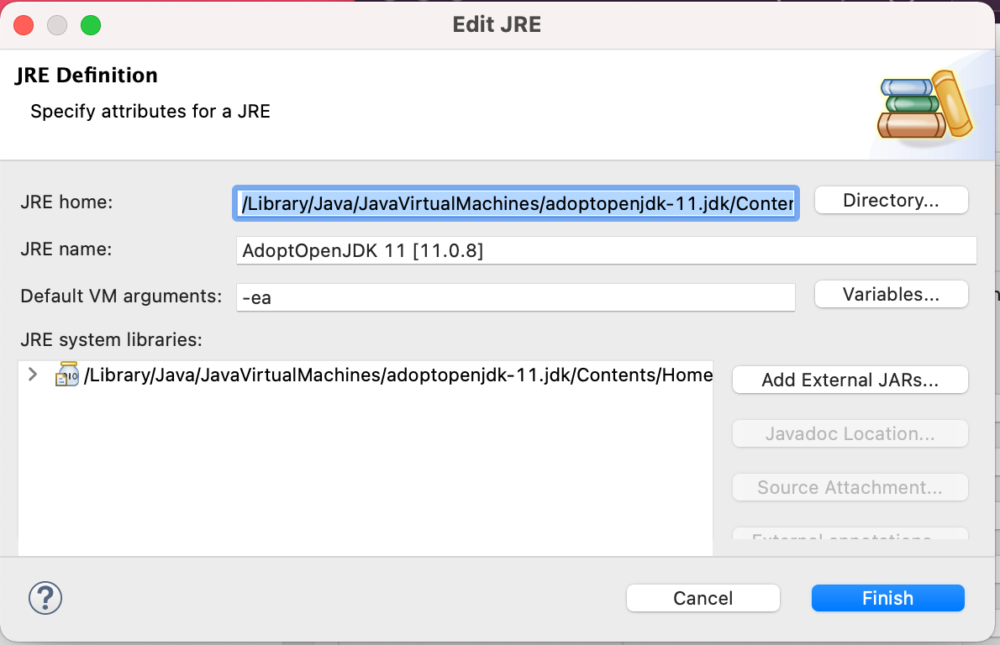

8. The assert statement
The assert statement has the form
assert <boolean-expression> ;
To execute it, evaluate the <boolean-expression>; if true, do nothing more; if false, throw an AssertionError, which will generally cause the program to abort.
The assert statement is used to help find errors. Here's an example.
We define a precondition to be a constraint on the parameters of a method. It is up to the user to ensure that method calls satisfy the precondition. If a call does not, the method can do whatever it wants. We can use an assert statement to throw an error if a precondition is not true.
Here is an example:
/** Return the area of a rectangle with width w and height h.
* Precondition: w >= 0 and h >= 0. */
public static int area(int w, int h) {
assert w >= 0 && h >= 0;
return w * h;
}
Here, the assert statement is not strictly necessary, but it helps the caller if the caller makes a mistake.
Permanently turning on assert-statement execution
By default, assert-statement execution is turned off. You can turn it on for each individual run or execution of a program. We show how to do that below. But in Eclipse, you change the setting so that assert-statement execution is always done. We suggest you change that setting now. Here's how:
1. Use menu item Preferences -> Java -> Installed JREs. You will see a window that looks something like the one shown to the right.
2. Select Installed JRE Java SE-1.8 (or another one if you like; it should be the one you normally use).
3. The Edit button will become available. Click it. A second window will open, the one shown below.
 4. In the Default VM arguments field, type
-ea
as we have already done. That stands for enable assertions.
5. Click button Finish. The window disappears.
6. In the window that is still open ---the one above--- click button Apply and Close.
Turning assert-statement execution on/off for one run
To turn assert-statement execution on or off for one run:
1. Select menu item Run -> Run Configurations.
2. In the window that opens, click tab Arguments. The arguments pane will open.
3. In the VM Arguments field, type or delete -ea as you wish.
4. Click button Run to run the program.